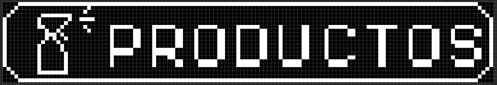
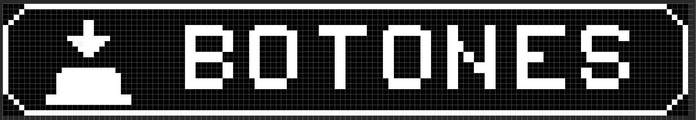
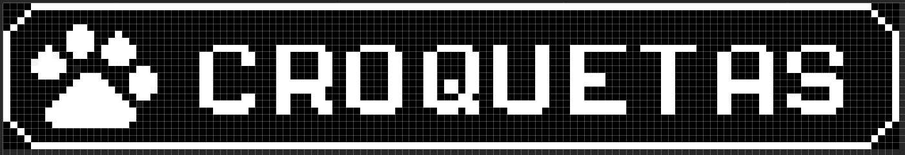

4. Configuración de Productos
La opción Productos dentro del menú principal cambia dependiendo del tipo de vending seleccionado:
- Productos de limpieza y automotriz: aparece como Productos.
- Granos y semillas: aparece como Granos.
- Croquetas para mascotas: aparece como Croquetas.
- Purificadora: aparece como Botones

Configuración de productos de limpieza.

Configuración de productos en purificadora.

Vista de productos tipo croquetas o granos.
Al acceder a la configuración de productos, según el tipo de vending seleccionado, se mostrará una lista con los productos disponibles. Puedes ingresar a cada uno para ajustar sus parámetros de forma individual.
4.1 Configuraciones para Productos, Granos y Croquetas
- Cantidad: Establece la cantidad disponible en la máquina para cada producto. Utiliza el control rotativo para seleccionar el valor y guarda los cambios regresando al menú anterior.
- Costo: Define el precio por litro o kilo del producto. Ajusta el valor con el control rotativo.
- Tiempo: Configura el tiempo de despacho para 1 litro o kilo. Esta opción solo debe modificarse si es necesario después de la calibración.
- Nombre: Permite asignar un nombre al producto. Navega por el abecedario con el control rotativo y selecciona letra por letra.
- Bloqueo: Desactiva temporalmente el producto en caso de agotamiento. Si el audio está habilitado, el sistema notificará al cliente con el mensaje: “No hay producto disponible.”
- CashBack: Establece un porcentaje de reembolso que se deposita en el monedero electrónico del cliente. Esta función requiere que el sensor NFC esté activado.
4.2 Configuraciones para Purificadora
- Costo: Define el precio por litro o kilo del producto. Gira el control rotativo para ajustarlo.
- Tiempo: Ajusta el tiempo que tarda en despacharse 1 litro o kilo. Solo se recomienda modificar esta opción después de la calibración.
- Tipo de Agua: Permite seleccionar entre Enjuague, Hielo, Purificada o Alcalina. Estas opciones deben coincidor con los textos mostrados en los botones físicos de la máquina.
- Cantidad: Ofrece opciones como Hielo 2.5kg, Hielo 5kg, Hielo 10kg, Enjuague, Garrafón 20L, Garrafón 10L o Botella 1L. Selecciona la opción que corresponda al formato físico del producto ofrecido en cada botón.
- Bloqueo: Desactiva temporalmente el producto. Si el audio está activado, el cliente escuchará: “No hay producto disponible.”
- CashBack: Asigna un porcentaje de devolución al monedero electrónico. Requiere el sensor NFC activado.